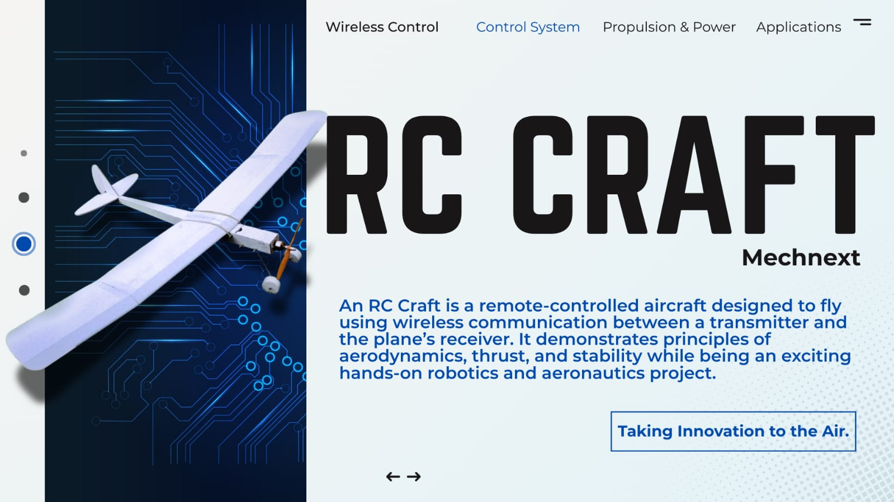

RC Craft - MechNext Club
RC Craft

- Aerodynamic Design: CFD simulations optimized wing geometry and lift-to-drag ratio.
- Lightweight Materials: Balsa wood frame reinforced with carbon fiber for durability.
- Power System: Brushless motor with Li-Po battery delivers up to 20 minutes of flight.
- Control Precision: 2.4 GHz transmitter with digital trims and responsive servos.
- Safety Features: Fail-safe programming and reinforced nose cone.
- Applications: Aerial mapping, hobby demonstrations, and aerodynamics education.
- Achievements: Stable performance in crosswinds, tested 5 km range.
- Future Improvements: FPV camera and GPS waypoint navigation.